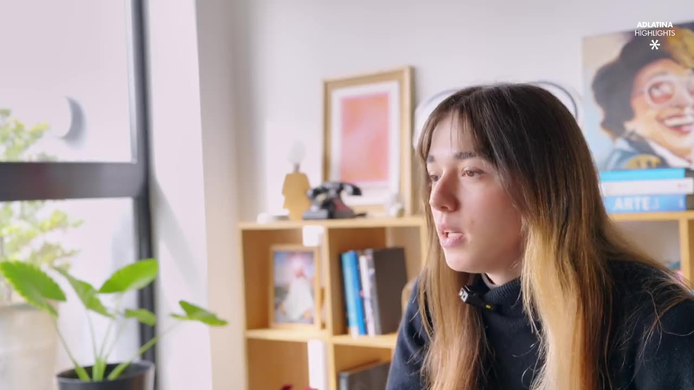

Hernán Sampó integra el jurado Effie Awards Argentina 2026
El founder de Vértice fue convocado como jurado de los Effie Awards Argentina, el certamen de referencia del marketing efectivo en el país.
Leer la nota →Nuevos Servicios · Producción · Live Streaming

El streaming en vivo dejó de ser un recurso de emergencia pandémica para convertirse en uno de los formatos más efectivos para conectar marcas con audiencias. Vértice formaliza su servicio de producción y estrategia de live streaming para marcas que quieren hacerlo bien.
Las marcas que transmiten en vivo generan entre 3 y 6 veces más engagement que las que publican contenido grabado. No es solo una cuestión de formato: el streaming crea urgencia, comunidad y autenticidad en tiempo real, tres atributos que el contenido editado no puede replicar.
El problema es que muchas marcas lo hacen mal: mala calidad técnica, sin estrategia de contenidos, sin protocolo de contingencia, sin integración en el ecosistema digital. El resultado es una transmisión que no convierte y que, peor aún, deja una impresión negativa.
Lo que diferencia el servicio de Vértice es la integración de dos disciplinas que raramente se juntan: producción técnica de alta calidad y estrategia de contenidos. No es solo enchufar cámaras y encender el stream. Es diseñar una experiencia.
El servicio incluye:
Lanzamientos de productos, presentaciones anuales para equipos distribuidos, training corporativo, conferencias de prensa, eventos de comunidad y activaciones con influencers son algunos de los formatos que gestionamos. En todos los casos, el streaming es parte de una estrategia mayor, no un fin en sí mismo.
Nuestro modelo es el mismo que define a Vértice en todas sus disciplinas: nivel técnico de agencia grande, atención y criterio de estudio boutique. Cada transmisión tiene un responsable de estrategia y un responsable técnico que trabajan en conjunto desde el brief inicial hasta el informe de cierre.
El founder de Vértice fue convocado como jurado de los Effie Awards Argentina, el certamen de referencia del marketing efectivo en el país.
Leer la nota →
VideoLanzamos los highlights de Octubre para Adlatina y Marketers. Mirá el episodio completo.
Ver episodio →
Vértice desarrolla la producción completa de fotografía y video para el lanzamiento de Auren+, la nueva línea de skincare de Laboratorios Ferrini. Contenido para e-commerce, redes sociales y comunicación de marca.
Leer la nota →